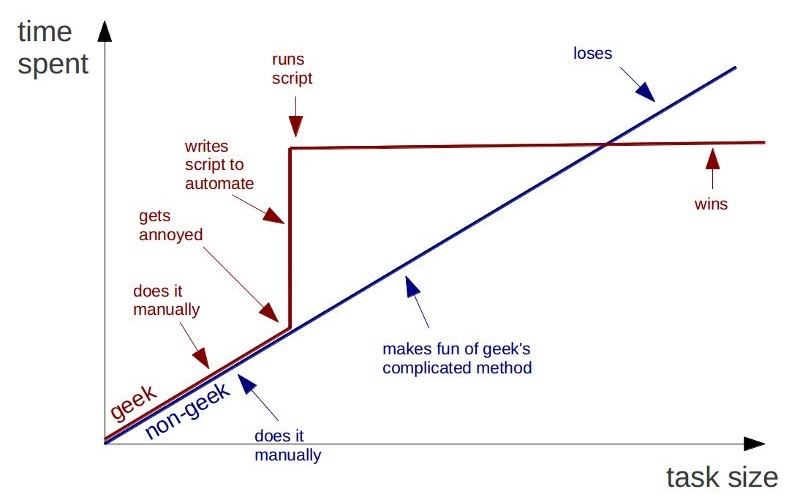

Love it or hate it, a lot of work is still done through email. Keeping a log of emails and responses can give a massive edge. Lets look at how we can automate the logging of all activity done on a theoretical support email alias.
The Scenario
Our theoretical company, let’s call them “Snap Inc”1, sells luxury sunglasses that have a tendency to break all the time2.
Customers can complete a form on the website which will generate an email to support@spectacles
All of the requestors can send email via the support alias. When they respond, they use templated responses and include their name for the customer. A response might look something like this.

Since they’re sending from an alias, they respond with a Reply All thus bringing their sent response back to the inbox. This is so the other processors can check their work for auditing purposes.
They all periodically check the inbox and when they find a ticket ending in their digits, manually create a new log line for it. When they respond to the tickets, they’ll update the Status accordingly. The basic log is a shared excel file, and currently looks like this.

As you can imagine, there’s a lot of room here for human error. One of the processors could miss an email and no log line would be created for it. They could mistype a ticket number.
Worst of all, this just kinda feels like a waste of time doesn’t it? It would be much better if the log tracked everything itself and just acted as a passive tracking solution.
Let’s automate this log. All together, a functional product will need to:
□ Create a new log row when a customer emails us.
□ Avoid creating duplicate tickets for the same customer. (Check if a ticket already exists)
□ Add the ticket number automatically.
□ Assign the ticket to the correct processor automatically.
□ Add the email date/time automatically.
□ Update the ticket when we respond.
□ Update the Status field to Replied when an email is sent back.
□ Update the Status field to Completed when we send a "ticket is completed" email.
Initial Setup
Let’s begin by creating a new flow set to trigger whenever an email is received by our support inbox.


You might notice all of our actions will boil down to either creating a new log line or updating an existing one. So, first we should check if the case number in the subject line maps to an existing ticket. If it does, update a ticket. If it doesn’t, create a new one.
First, let’s create a few new fields in our log.

The TicketID field will grab the ID from the subject line, making it easier to track things. The MS Flow log field will track every status update made by the system.
Ticket Number
Now, let’s build the logic for the TicketID field.
We know that the subject of every email will look something like “Update to Spectacles Support Case #27307612”, so this will find the character # and grab the 8 digit string that follows it.
The block below will create a new variable called Ticket Number we can use throughout the flow.
 Value:
Value: substring(triggerBody()?['Subject'], indexOf(triggerBody()?['Subject'], '#'), 8)
Split Logic (Existing Ticket?)
Next, let’s check if we have a log line for this ticket already.
We’ll create a Get a Row block using the Ticket Number variable as a key.

In plain English this is asking our Excel table “Give me the row with this ticket number”. If there’s no ticket with this number yet, this will fail.
Now we can add two parallel steps, one to create a new row, and one to update an existing row.

And we’ll set the Add a row to only run if Get a Row failed.


Let’s see how we’re doing on that checklist of features
☑ Create a new log row when a customer emails us.
☑ Avoid creating duplicate tickets for the same customer. (Check if a ticket already exists)
☑ Add the ticket number automatically.
□ Assign the ticket to the correct processor automatically.
□ Add the email date/time automatically.
☑ Update the ticket when we respond.
□ Update the Status field to Replied when an email is sent back.
□ Update the Status field to Completed when we send a "ticket is completed" email.
Nice! Now that we have the logic to create and update log lines respectively, we’ll need some logic to actually figure out what to put there.

Contextual Variables
Let’s give ourselves some variables to hold the dynamic content we’ll end up needing when adding or creating a row. All of these blocks should occur before our split.
Time
We can use a Convert Time Zone block to convert grab the time we received the email to the inbox,
and convert it from ugly machine-readable UTC time (2019-03-7T14:47:06.9459017Z) to nice friendly meatbag-readable time (Thu 3/7/2019 8:01 AM)

Processor
We know that tickets are assigned by the last digit of the ticket number: Tim takes tickets ending in 0-3, Jayson in 4-6, and Wendy in 7-9.
So, let’s create a lookup table to that effect. We’ll add a tab to our log file, and make a table as shown below. Remember to Format As Table so that MS Flow can detect it.

Then, we’ll do a Get a Row block3 as follows:

Key Value: substring(variables('Ticket Number'), sub(variables('Ticket Number'),1), 1)
Our expression will grab the last digit of the ticket number, and the block will use this digit to grab the corresponding row of the processor lookup table.
Status
This will be our most complex variable by far. We’ll need to check the content of an email to determine what type of response was sent and set it accordingly. Luckily, our team is using templated responses so we can do string matching to detect what kind of email was sent fairly easily.
Remember that when a processor responds to a ticket, they’ll do so via Reply All thus sending their response back to the support Inbox, this way the other requestors can see how they’re responding. This means our Flow will be reading both customer responses and processor responses.
Here’s the plan. Let’s create a new variable for status, and set it using some contextual if-checks on the content of the email.
Our first check should see if this email was sent by us or the customer.
Add a Initialize variable block to give us a blank Status variable to work with.
Add a Condition block set to check the email was From our alias. If not, it was sent by the customer and we can set the Status variable to “Customer Responded”.4

If it was sent by us, we’ll need to figure out which of our templated responses it was.
For each of our common responses, we’ll add another Condition block inside of whichever If wasn’t used last time.
So for instance, in the If yes field of the block we just outlined, we’ll add something like this.

Here we check if the Body of the email contains the string we pasted here. Note that you should only paste what will be consistent across all of the responses, don’t paste in names or anything else contextual.
If it’s a match, we’ll set the Status variable to the appropriate value.
Then we’ll put our next check in the If no and so on.

Is it ugly nesting them like this? Absolutely, but MS Flow’s Switch block doesn’t let us match against contains values, only exact matches. So, nested If’s it is.
Add & Update Revisited
Now that we have our SuperCoolDynamicVariables™️ we can go back to our Add and Update blocks and give them some functionality.
Add a new ticket
Our final Add a row block will look as follows.

Make sure your icons/colors match what I have here, MS Flow allows multiple objects to have the same name if they’re from different contexts. Especially make sure your Processor variable is from our Get Processor block and not from our Get a Row block.5

Update an existing ticket
Our final Update a row block will look as follows.

We’ll grab the row with the matching ticket number and update the status to whatever our Status variable ended up as.
We’ll also update the MS Flow log field with what we changed and when.6
Leave the other fields blank as they aren’t changing.
Congrats! Your log will now automatically update the status of tickets for you.
As a bonus, you now have the MS Flow log field recording when each update to the ticket was made.

That gives you some nice data to work with if you ever want to audit how long one of your processors takes to respond to customers.
Wrapup
Your final flow will look something like this:

Wowee, we did it! Give yourself a solid pat on the back for saving literally minutes of time. What’s that? That doesn’t seem like very much? But remember, this is minutes saved on every single ticket for the rest of time. That adds up to whole heck of a lot of minutes.

That’s it for today. If your brain is humming with ideas on more things we could add here to automate even more things, then I’ve done my job.
-
Any resemblance to actual companies or products is purely coincidental. This is a theoretical exercise. ↩
-
You might want to rename the block to “Get Processor” at this time using the
…button like I did for sanity’s sake. ↩ -
We could technically add some logic here to read what type of response the customer sent, but that’s both a little too complex for this tutorial, and a little unnecessary. ↩
-
I’ve done this before. Since the
Get a Rowblock failed, itsProcessorvariable will be empty, meaning we will be adding rows with an assigned processor of “ “. ↩ -
Note the green variable is grabbing whatever the
MS Flow logcurrently is and adding that back in before we add a new line to it. Without this we’ll only ever have the most recent status change as it keeps overwriting itself. ↩